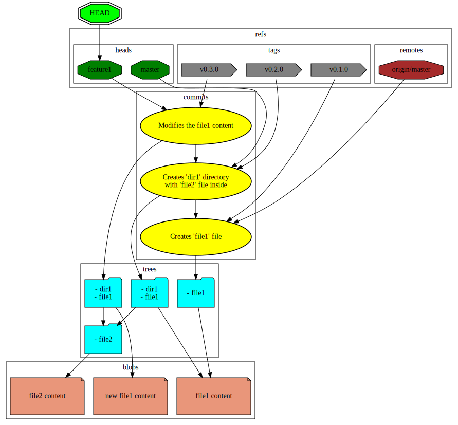

Introduction
Architecture

Blobs
Blobs are binaries representing file contents. They are not associated with any particular file name or any other attribute.
Hash of a Blob
The hash is from a 'blob' keyword, followed by a space character, the of the contents in bytes, a NULL character and the file contents itself. That is to decrease possibility of hash collision with different types of objects. The most obvious one would be an empty blob with an empty tree.
echo -e -n 'blob 13\0BLOB_CONTENTS' | shasum -a 1
# >>> b9bb0bbb048fcfb90a6f879bd512b8548a9e576b -
echo -n 'BLOB_CONTENTS' | git hash-object --stdin -t blob
# >>> b9bb0bbb048fcfb90a6f879bd512b8548a9e576b
Trees
Format
{{file_mode}} {{object_type}} {{object_hash}} {{file_name}}
| File Mode | Meaning |
|---|---|
| 040000 | directory |
| 100644 | normal file |
| 100755 | executable file |
| 120000 | symbolic link |
Example
040000 tree 18c5bec90862ddd02999cc33fdcaf2ffccdbb4be src
100644 blob 27a4aeccf4d8e1789222440d137bac282c850154 index.html
100755 blob 620d49638a76f40f2cd89003077db99f15b5e7e2 deploy.sh
Commits
Syntax
tree {{tree_hash}}
parent {{parent_commit_hash}}
author {{author_name}} <{{author_email}}> {{posix_time}} {{time_zone_offset}}
committer {{committer_name}} <{{committer_email}}> {{posix_time}} {{time_zone_offset}}
{{message}}
Example
tree e537d69391edaa36634e9a92d8083c6c7a34dad3
parent a7e6510fad6c4a3df55777082d75c33fc5be41fa
author Bob <bob@example.com> 1615060615 +0100
committer Alice <alice@example.com> 1615061025 +0300
feat(auth): Implement basic authentication
References
Heads
Tags
Remotes
HEAD
Workflow
Updating Index
.gitignore
Commiting
Branching
Merging
Rebasing
CLI
Configuration
Format
[core]
editor = {{editor_executable_path}}
[user]
name = {{user_name}}
email = {{user_email}}
Full Reference
All possible configuration options can be fount at this website.
Porcelain Commands
add
Updates the index based on the current state of the working tree.
Examples
git add some_file
fetch
Fetches refs from remote repositories together with objects associated with them.
Examples
git fetch
# >>> remote: Enumerating objects: 278, done.
# >>> remote: Counting objects: 100% (278/278), done.
# >>> remote: Compressing objects: 100% (143/143), done.
# >>> remote: Total 258 (delta 120), reused 231 (delta 93), pack-reused 0
# >>> Receiving objects: 100% (258/258), 28.11 KiB | 487.00 KiB/s, done.
# >>> Resolving deltas: 100% (120/120), completed with 7 local objects.
# >>> From github.com:mstream/nix-config
# >>> bd31137..ac394e6 master -> origin/master
# >>> * [new tag] release-17.11.2020 -> release-17.11.2020
status
Examples
git status
# >>> On branch master
# >>> nothing to commit, working tree clean
Plumbing Commands
cat-file
Provides information regarding repository objects such as their type, content and size.
Examples
git cat-file --batch-all-objects --batch
# >>> f7e2dd07890b1a49d80705230e43ca8420439887 blob 10
# >>> My project
commit-tree
Creates a new commit object.
Examples
git commit-tree -m "COMMIT_MESSAGE" 6dabf49129f970f089cb7ef94fa53609a6a2815f
# >>> 9d697bc9a410749ac0e9acdb3f6361d3c9af5fa4
hash-object
Calculates an object hash from a file or the standard input. Optionally saves it alongside the object in the git database.
Examples
echo "BLOB_CONTENTS" | hash-object --stdin -w
# >>> b9bb0bbb048fcfb90a6f879bd512b8548a9e576b
echo "100644 blob b9bb0bbb048fcfb90a6f879bd512b8548a9e576b README.md" | git hash-object --stdin -w
# >>> d8d7682b815204740964f2ab1c82bb3df7dfe195
update-ref
Updates a reference value safely.
Examples
git update-ref refs/heads/master 9d697bc9a410749ac0e9acdb3f6361d3c9af5fa4
write-tree
Creates a tree object based on the current index contents.
Examples
git write-tree
# >>> 6dabf49129f970f089cb7ef94fa53609a6a2815f
Conventional Commits
Format
{{type}}{{optional_scope}}: {{description}}
{{optional_body}}
{{optional_footer}}
Commit Message Template
The commit.template Git option allow us to be presented with a custom
message template whenever we execute a git commit command.
The value of that option is either an absolute or a relative path to
the file containing the template. If a relative path is used, the
repository in which the command got executed will be used as the base
directory. Therefore, the template can be versioned along the content
of the repository itself.
# :============================ COMMIT ================================:
# |--- SUBJECT --------------------------------------------------------|
# | |
# | <type>[(scope)]: <description> |
# | |
# | Type can be: |
# | doc (changes to documentation) |
# | feat (new feature) |
# | fix (bug fix) |
# | license (edits regarding licensing) |
# | refactor (refactoring code) |
# | revert (reverting changes) |
# | style (formatting, missing semi colons, etc.) |
# | test (adding or refactoring tests) |
# | |
# | Examples: |
# | feat(auth): Enable basic authentication |
# | fix(conf): Correct typo in the configuration |
# | |
# |<--- SUBJECT START ------- under 50 chars --->|<------------------->|
#################################################XXXXXXXXXXXXXXXXXXXXXXX
#################################################XXXXXXXXXXXXXXXXXXXXXXX
# |<--- SUBJECT END --------- under 50 chars --->|<------------------->|
# .---- keep the empty line bellow ------------------------------------.
# .--- BODY -----------------------------------------------------------.
# | |
# | [- body line 1] |
# | [- body line 2] |
# | [.............] |
# | [- body line n] |
# | |
# | Example: |
# | - add README file to show how to use the library |
# | - add CONTRIBUTING file to establish coding style conventions |
# | |
# |<--- BODY START -------------------------------- under 72 chars --->|
#######################################################################X
#######################################################################X
# |<--- BODY END -----------------------------------under 72 chars --->|
# .---- keep the empty line bellow ------------------------------------.
# .--- FOOTER ---------------------------------------------------------.
# | |
# | [footer line 1] |
# | [footer line 2] |
# | [.............] |
# | [footer line n] |
# | |
# | Example: |
# | Co-authored-by: Bob <bob@mail.com> |
# | Signed-off-by: Alice <alice@mail.com> |
# | Closes #34 |
# | BREAKING CHANGE: deprecated API is removed |
# |<--- FOOTER START ------------------------------ under 72 chars --->|
#######################################################################X
#######################################################################X
# |<--- FOOTER END ---------------------------------under 72 chars --->|
# :====================================================================:
Specification
The full specification can be found at this website.